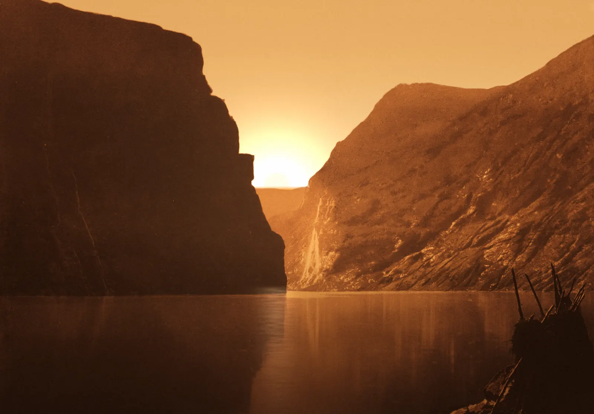
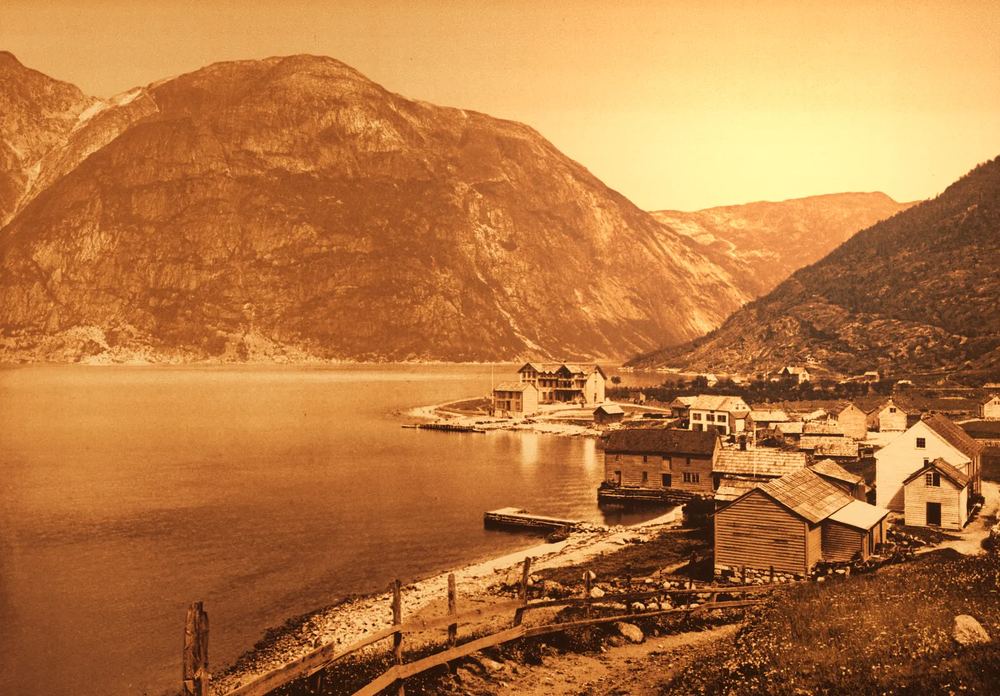
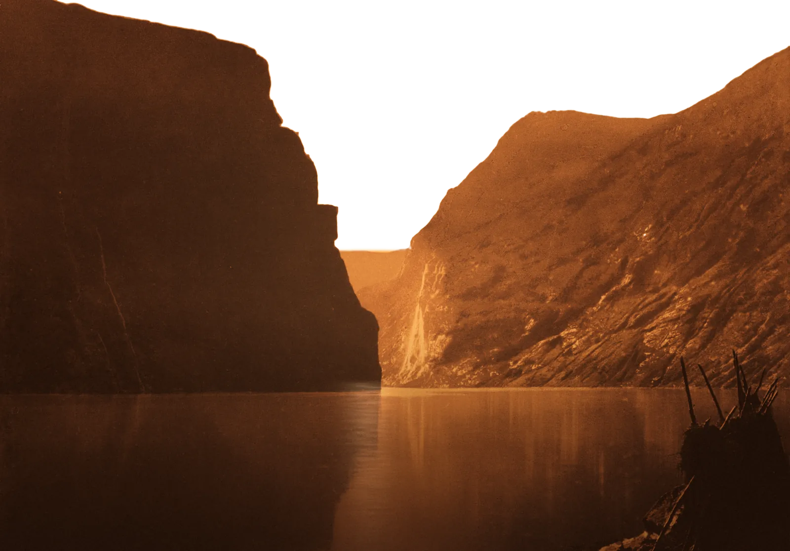
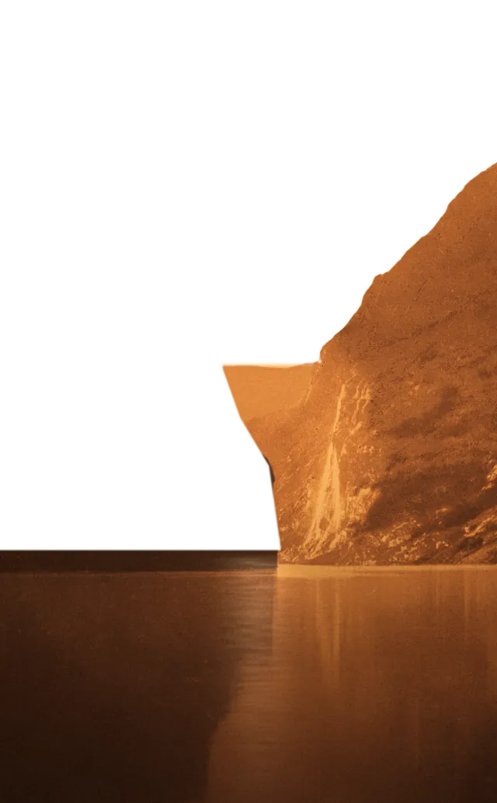
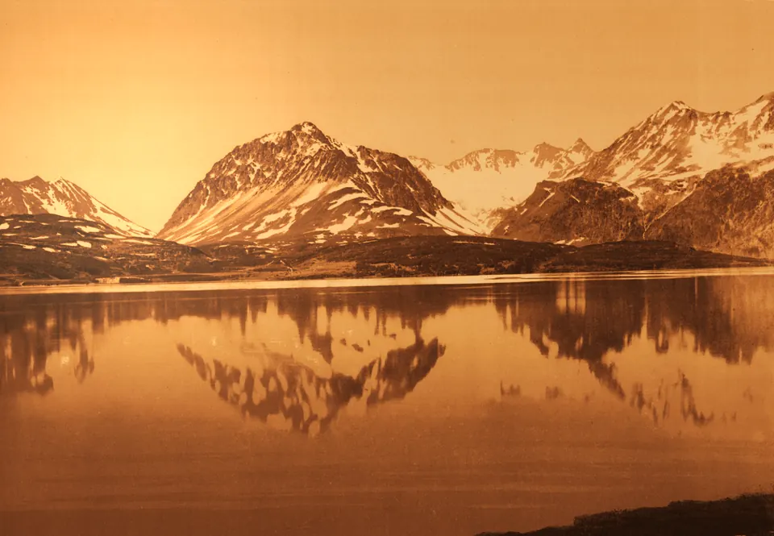

A fjord at the last minute of the day, a front desk with four keys, postcards that carry the numbers. Quiet, warm, exact.
01 · Hero composite, live
First light
Three stacked layers: the graded photograph drawn by interactive/haze.js (the air above the horizon shimmers, the sun's bloom breathes, the pointer nudges it), the name, then fjord-front-right, a cut-out of the sunlit far mountain. The name passes in front of the dark near cliff and sinks behind the far one.
Albretsen
Quiet software that pays for itself.
Albretsen AS · since 2016
02 · Hero imagery
Graded light
Public-domain photochroms (Library of Congress, c. 1890-1900) and a NASA ISS photograph, gradient-mapped into one amber family with a low sun added where the light wants it. AVIF, WebP and JPEG at 960, 1600 and 2400 wide.

hero/fjord-{960,1600,2400}.{avif,webp,jpg} · the main herohero/orbit-{960,1600,2400} · second scene: the same sun, from 400 km uphero/lake-{960,1600} · stillness (Harbor, quiet sections)

hero/village-{960,1600} · small-town life (Fun Libs, about)

hero/fjord-front-* · both cliffs + water, sky removedhero/fjord-front-right-* · far mountain only (name passes behind it)
hero/fjord-portrait-{640,1080} · phones

hero/fjord-front-right-portrait-*
03 · Identity
The mark
An A drawn as a peak, its crossbar a horizon, a half sun resting on it. Wordmarks are outlined Jost capitals at signage spacing; AS in copper.
Step 1 · A private knowledge base shared by people and AI.
Step 0 · Body copy in Jost 400 at 1.6 leading. Built at 17 with no marketing, Fun Libs has passed 113,000 installs; MCP Emails gives agents 17 tools across about 100 email providers.
06 · Products
Postcards
Each live or building product is a postcard: a graded photograph, the real logo on a perforated stamp, and a postmark carrying its one number from content.js. Sources in src/postcard.html?p=….
Hover or focus a key: the pigeonhole lamp warms, the real logo rises like a letter into the light, the key swings and the fob turns over to show its number. interactive/keyrack.js, no dependencies. Full-page demo: interactive/demo.html.
09 · Motion study
Slow air
Albretsen
1 · First Light
The name rises out of a soft blur in 2.6 s on a settle curve. Once per visit, on load.

2 · Heat Haze
feTurbulence noise rises through feDisplacementMap at 4-6 px. For the hero, use the WebGL version.
3 · Sea Breeze
9-14 s out-of-phase loops, 3-5 px and under half a degree. Paper should feel like it is resting in moving air.
4 · Key Swing
A damped pendulum: 7°, −4.5°, 2.6°, −1.3°, 0.5°, rest, over 2.4 s.
5 · Postmark
Strikes once when it scrolls into view: drops, overshoots to 0.97, lands a few degrees off true, ink settles to 82%.
the sun goes down
6 · Long Shadows
Scroll position sets --sun from 0 to 1; paper shadows lengthen and warm toward the bottom of the page. Drag to preview.